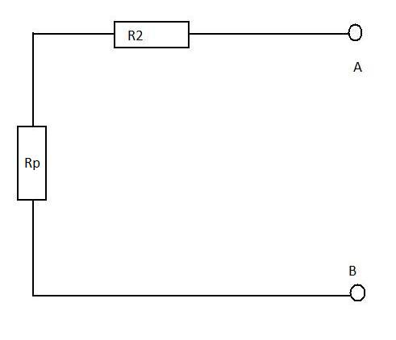

`Thévenin's theorem
This is an extension of Superposition theory. Thevenin's theory is particulary very useful when we are looking at circuits where load resistance is changing. This saves us time to analyse the new circuit when resistance is changed.
An active network with terminals A and B can be replaced with a constant voltage source, V, with a magnitude that is equal to the open circuit voltage across terminals A and B.
To help to understand this theorem and show its usefulnes we will consider the folowing example:
We have a circuit that is shown below:
We will change this circuit leaving a constant voltage source, V, and a resistor connected in series to the voltage source.
If V and r are known we can see that any resistor connected to terminals A and B can be calculated very quickly.
How to simplify such a circuit.
First of all we conssider an open circuit with no load connected to its terminals.
then we see that two resistors are connected in paralel so total resistance is:
or
So our circuit simplyfies to

and again we can simplify our circuit even further